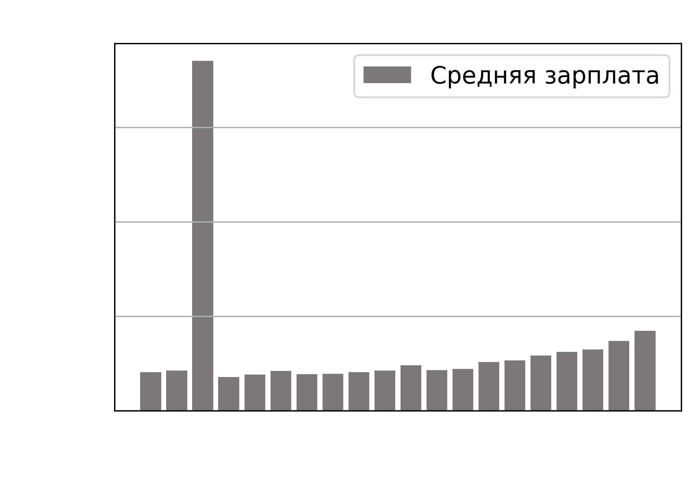
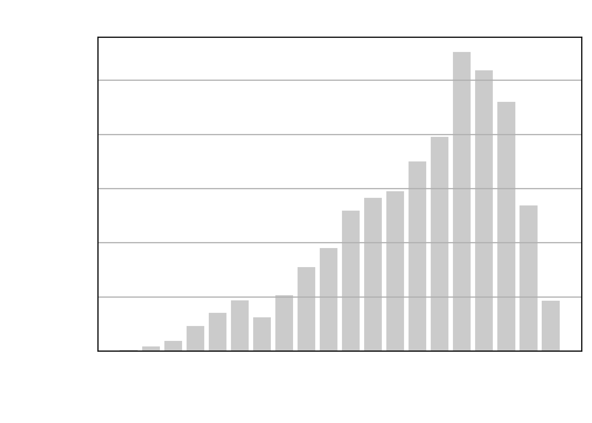
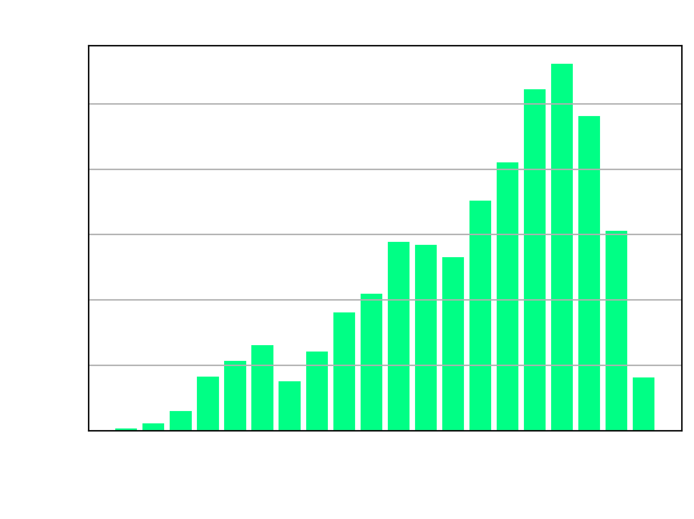
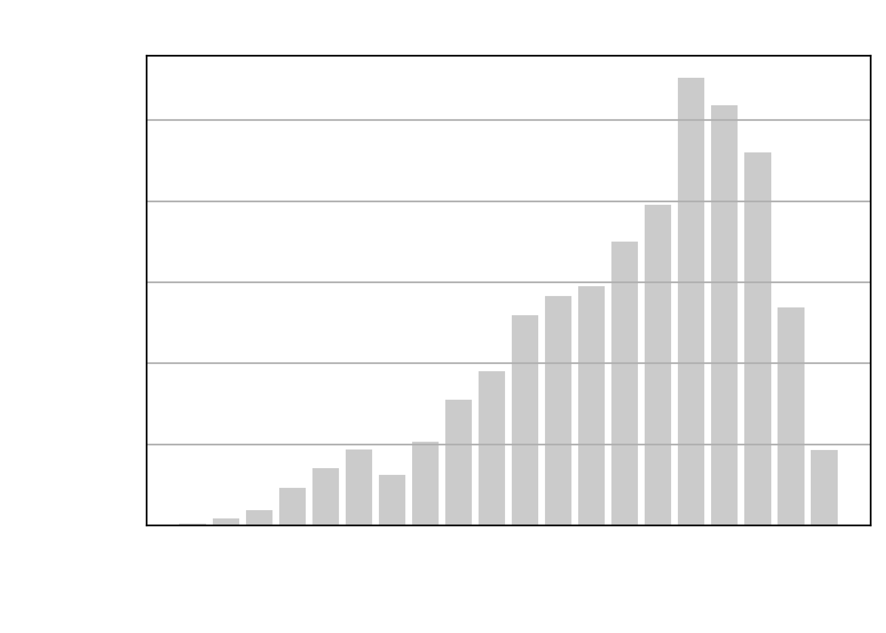
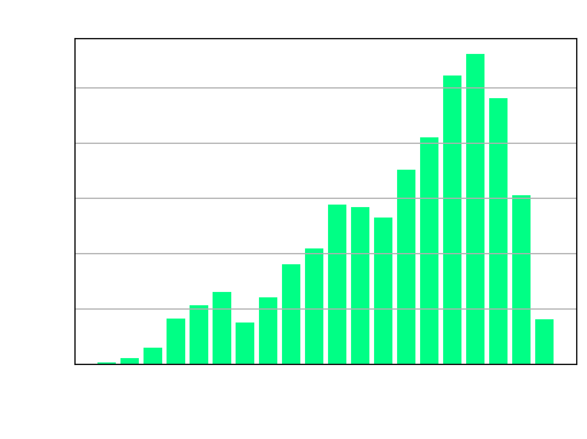
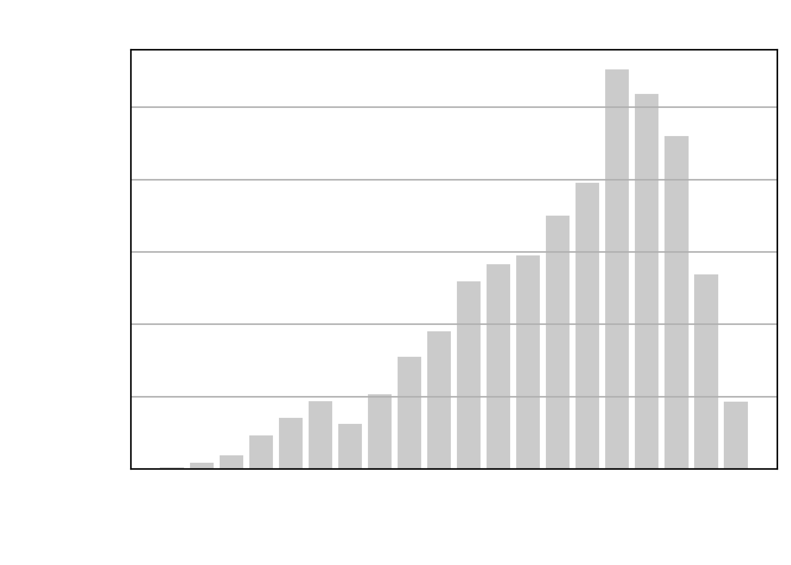
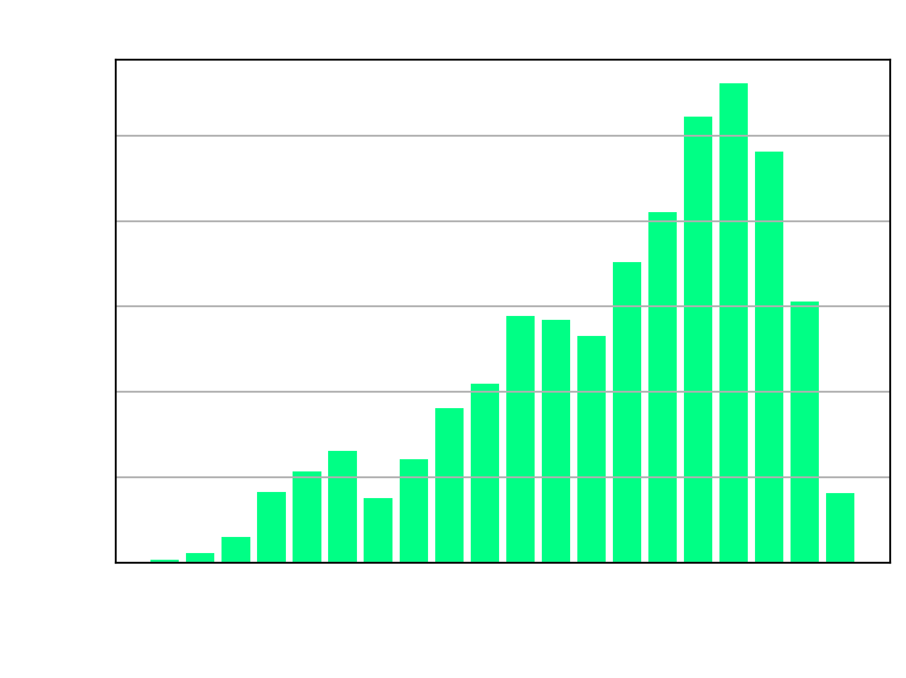

 





| Год | Средняя зарплата | Средняя зарплата - Тестировщик (QA-инженер) | Количество вакансий | Количество вакансий - Тестировщик (QA-инженер) |
|---|---|---|---|---|
| 2003 | 50000 | 40000 | 6545240 | 4533 |